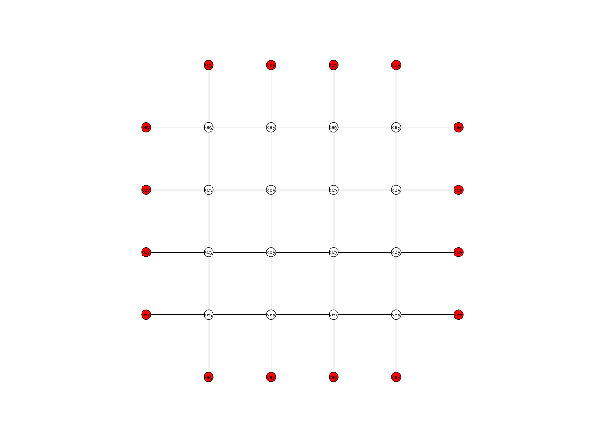

NetworkPlotter
-
class
compas.visualization.NetworkPlotter(network, **kwargs)[source] Bases:
compas.visualization.plotters.plotter.PlotterDefinition of a plotter object based on matplotlib for compas Networks.
Parameters: network (object) – The network to plot. -
title str – Title of the plot.
-
network object – The network to plot.
-
vertexcollection object – The matplotlib collection for the network vertices.
-
edgecollection object – The matplotlib collection for the network edges.
-
defaults dict – Dictionary containing default attributes for vertices and edges.
Example
import compas from compas.datastructures import Network from compas.visualization import NetworkPlotter network = Network.from_obj(compas.get('lines.obj')) plotter = NetworkPlotter(network) plotter.draw_vertices( text='key', facecolor={key: '#ff0000' for key in network.leaves()} ) plotter.draw_edges() plotter.show()References
- Hunter, J. D., 2007. Matplotlib: A 2D graphics environment. Computing In Science & Engineering (9) 3, p.90-95. Available at: http://ieeexplore.ieee.org/document/4160265/citations
Methods
__init__(network, \*\*kwargs)Initialises a network plotter object clear()Clears the network plotter edges and vertices. clear_collection(collection)Clears a matplotlib collection object. clear_edges()Clears the network object edges. clear_vertices()Clears the netwotk plotter vertices. draw_arrows(arrows)Draws arrows on a 2D plot. draw_edges([keys, width, color, text, ...])Draws the network edges. draw_lines(lines)Draws lines on a 2D plot. draw_points(points)Draws points on a 2D plot. draw_polygons(polygons)Draws polygons on a 2D plot. draw_vertices([keys, radius, text, ...])Draws the network vertices. save(filepath, \*\*kwargs)Saves the plot on a file. show()Displays the plot. update([pause])Updates and pauses the plot. update_edges()Updates the plotter edge collection based on the network. update_linecollection(collection, segments)Updates a line collection. update_pointcollection(collection, centers)Updates the location and radii of a point collection. update_polygoncollection(collection, polygons)update_vertices()Updates the plotter vertex collection based on the network. Attributes
axesReturns the axes subplot matplotlib object. bgcolorReturns the background color. figureReturns the matplotlib figure instance. interactiveReturns a boolean describing of the plot is interactive. titleReturns the title of the plot. -